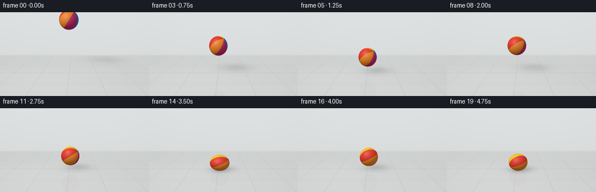
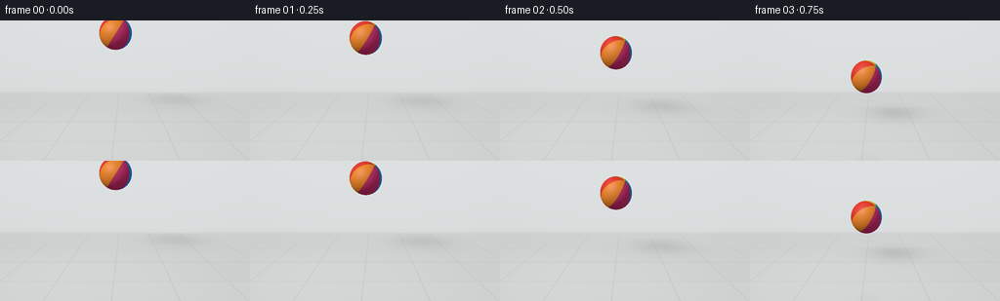
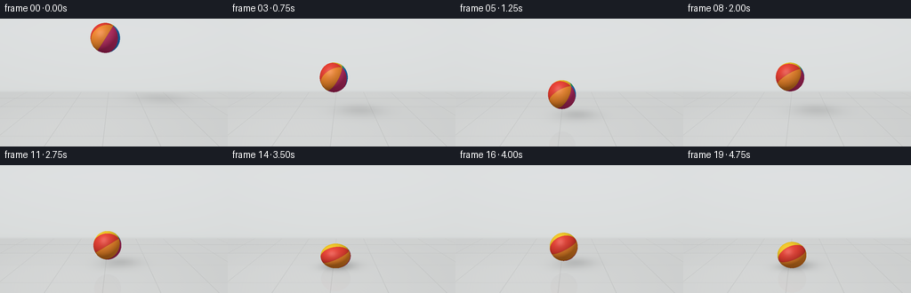
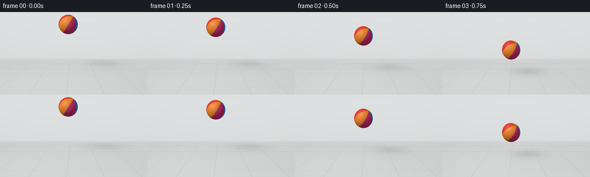

CODING AGENTS AS PIXEL WORLD MODELS
traex/GPT-6.1-Sol · mechanics_0042
点击播放 · 原生 RGB 像素
逐轮保存的候选
回放视频、检查图与代码变化。
每份候选均可单独播放。实际图片检查记录在下方工具轨迹中。
候选 01播放与检查图
点击播放 · 原生 RGB 像素


展开代码变化
--- 上一保存版本
+++ 本次保存版本
@@ -0,0 +1,190 @@
+"""A self-contained, analytic RGB rendering of a bouncing rubber ball.
+Only numpy/Pillow and the provided output helper are used.
+"""
+from pathlib import Path
+import json
+import numpy as np
+from PIL import Image
+import artifact_io
+
+ROOT = Path(__file__).resolve().parent
+SPEC = json.loads((ROOT / 'task_spec.json').read_text())
+W, H = SPEC['width'], SPEC['height']
+SS = 3
+WW, HH = W*SS, H*SS
+RADIUS = .57
+GRAVITY = 5.56
+
+
+def normalized(v):
+ return v / np.maximum(np.linalg.norm(v, axis=-1, keepdims=True), 1e-12)
+
+# Stationary product-shot camera, with a gently downward view of the hard floor.
+eye = np.array([0., 3.1, 8.6])
+look = np.array([0., 1.3, 0.])
+forward = normalized(look-eye)
+right = normalized(np.cross(forward, np.array([0., 1., 0.])))
+up = np.cross(right, forward)
+yy, xx = np.mgrid[:HH, :WW]
+u = (xx+.5-WW/2)/(245*SS)
+v = -(yy+.5-HH/2)/(245*SS)
+rays = normalized(forward + u[...,None]*right + v[...,None]*up)
+origins = np.broadcast_to(eye, rays.shape)
+key = np.array([-3.7, 7., 4.2])
+
+# Ground and backdrop intersections are fixed throughout the shot.
+t_floor = -eye[1] / np.where(abs(rays[...,1])>1e-8, rays[...,1], 1e-8)
+t_wall = (-5.5-eye[2]) / rays[...,2]
+floor_visible = (t_floor>0) & (t_floor<t_wall)
+t_bg = np.where(floor_visible, t_floor, t_wall)
+world = eye + t_bg[...,None]*rays
+
+# Linear-light porcelain: subtly variegated, large square slabs and fine joints.
+fx, fz = world[...,0], world[...,2]
+tile = 1.8
+ix = np.floor((fx+.35)/tile)
+iz = np.floor((fz+.25)/tile)
+within_x = np.mod(fx+.35, tile)
+within_z = np.mod(fz+.25, tile)
+seam_dist = np.minimum.reduce([within_x, tile-within_x, within_z, tile-within_z])
+seam = np.exp(-(seam_dist/.011)**2)
+variation = .006*np.sin(ix*12.2+iz*7.7) + .002*np.sin(fx*39+fz*29)*np.sin(fz*47-fx*13)
+light_pool = .042*np.exp(-((fx+1.8)**2+(fz-1.8)**2)/22)
+floor_col = np.stack([.62+variation+light_pool, .633+variation+light_pool, .63+variation+light_pool],axis=-1)
+floor_col *= (1-.19*seam[...,None])
+wall_y = world[...,1]
+wall_col = np.stack([.70+.035*np.clip(wall_y/4,0,1), .72+.035*np.clip(wall_y/4,0,1), .718+.042*np.clip(wall_y/4,0,1)],axis=-1)
+# Soft darkening at the cove and a narrow, understated base trim.
+wall_col *= (1-.055*np.exp(-np.maximum(wall_y,0)/.11))[...,None]
+baseboard = (wall_y>=.025)&(wall_y<.075)
+wall_col[baseboard] *= .97
+background = np.where(floor_visible[...,None], floor_col, wall_col)
+
+palette = np.array([[.88,.052,.032], [.98,.64,.022], [.028,.48,.20], [.025,.28,.80], [.65,.035,.17], [.99,.28,.025]])
+
+
+def rotation(t):
+ a, b, c = .42+.17*t, .55+.27*t, -.37+.09*t
+ rx = np.array([[1,0,0],[0,np.cos(a),-np.sin(a)],[0,np.sin(a),np.cos(a)]])
+ ry = np.array([[np.cos(b),0,np.sin(b)],[0,1,0],[-np.sin(b),0,np.cos(b)]])
+ rz = np.array([[np.cos(c),-np.sin(c),0],[np.sin(c),np.cos(c),0],[0,0,1]])
+ return rz@ry@rx
+
+
+def state(t):
+ # First free fall, then progressively shorter dissipative bounces.
+ # Contact moments coincide with video samples, so the floor interaction
+ # remains legible even at the mandated four frames per second.
+ landings = [1., 2.5, 3.5, 4.25, 4.75]
+ contact = [.10, .08, .07, .06, .08]
+ if t<1.-1e-8:
+ height = 2.78-.5*GRAVITY*t*t
+ velocity = -GRAVITY*t
+ sy = 1+.055*min(abs(velocity)/5.56,1)
+ else:
+ j = max(i for i,s in enumerate(landings) if t>=s-1e-8)
+ dt = max(0., t-landings[j])
+ if dt<=contact[j]+1e-8:
+ compression = [.24,.19,.14,.10,.075][j]
+ sy = 1-compression*(.5+.5*np.cos(np.pi*dt/contact[j]))
+ height = 0.
+ elif j==4:
+ height=0.; sy=1.
+ else:
+ flight = landings[j+1]-landings[j]-contact[j]
+ elapsed = dt-contact[j]
+ speed = .5*GRAVITY*flight
+ height = max(0., speed*elapsed-.5*GRAVITY*elapsed*elapsed)
+ velocity = speed-GRAVITY*elapsed
+ sy = 1+.035*abs(velocity)/4.
+ scales = RADIUS*np.array([1/np.sqrt(sy),sy,1/np.sqrt(sy)])
+ center = np.array([-.33+.025*t, scales[1]+height, 0.])
+ return center, scales, height
+
+
+def hit_ball(origin, direction, center, scales):
+ oc = (origin-center)/scales
+ dr = direction/scales
+ aa = np.sum(dr*dr,axis=-1)
+ bb = np.sum(oc*dr,axis=-1)
+ cc = np.sum(oc*oc,axis=-1)-1
+ discriminant = bb*bb-aa*cc
+ distance = (-bb-np.sqrt(np.maximum(discriminant,0)))/aa
+ mask = (discriminant>=0)&(distance>0)
+ point = origin+distance[...,None]*direction
+ unit = (point-center)/scales
+ normal = normalized(unit/scales)
+ return mask, distance, point, unit, normal
+
+
+def ball_surface(point, unit, normal, view, t):
+ # Colored vulcanized rubber panels, separated by hairline molded seams.
+ local = unit@rotation(t)
+ longitude = np.arctan2(local[...,2],local[...,0]) + np.pi
+ phase = longitude/(2*np.pi)*6
+ sector = np.floor(phase).astype(int)%6
+ albedo = palette[sector].copy()
+ edge = np.minimum(np.mod(phase,1),1-np.mod(phase,1))
+ pole = np.sqrt(np.maximum(0.,1-local[...,1]**2))
+ groove = np.exp(-(edge*np.maximum(pole,.18)/.012)**2)
+ albedo *= (1-.25*groove[...,None])
+ # Very fine, low-contrast, non-glossy rubber microtexture.
+ pores = np.sin(local[...,0]*181+local[...,2]*117)*np.sin(local[...,1]*163-local[...,2]*93)
+ albedo *= (1+.014*pores[...,None])
+ lightdir = normalized(key-point)
+ ndl = np.maximum(np.sum(normal*lightdir,axis=-1),0)
+ hemisphere = np.clip(normal[...,1]*.5+.5,0,1)
+ irradiance = .22+.60*ndl+.10*hemisphere
+ color = albedo*irradiance[...,None]
+ # Broad, subdued highlights describe the rubber surface rather than glass.
+ half = normalized(lightdir+view)
+ highlight = np.maximum(np.sum(normal*half,axis=-1),0)
+ color += (.068*highlight**27+.026*highlight**5)[...,None]*np.array([1.,.96,.88])
+ filldir = normalized(np.array([4.,3.,2.])-point)
+ fill = np.maximum(np.sum(normal*filldir,axis=-1),0)
+ color += albedo*(.075*fill[...,None])*np.array([.78,.9,1.])
+ return np.clip(color,0,1)
+
+
+def render(t):
+ center, scales, altitude = state(t)
+ color = background.copy()
+ # A broad overhead-light shadow gets sharper and darker near contact.
+ # It always stays on the actual floor, not on the image plane.
+ h = center[1]
+ shadow_center = center[[0,2]]+(center[[0,2]]-key[[0,2]])*h/(key[1]-h)
+ spread = .33+.21*h
+ dx, dz = fx-shadow_center[0], fz-shadow_center[1]
+ shadow = np.exp(-.5*((dx/(spread*1.13))**2+(dz/spread)**2))
+ opacity = .33/(1+.35*h)
+ contact_shadow = np.exp(-.5*(((fx-center[0])/.43)**2+((fz-center[2])/.30)**2)) * .30*np.exp(-altitude/.18)
+ darken = (1-opacity*shadow)*(1-contact_shadow)
+ color[floor_visible] *= darken[floor_visible,None]
+ # Weak, physically placed reflection in the polished hard tile surface.
+ reflected_rays = rays.copy()
+ reflected_rays[...,1] *= -1
+ m, d, p, un, no = hit_ball(world+np.array([0.,.0001,0.]), reflected_rays, center, scales)
+ m &= floor_visible
+ if np.any(m):
+ reflected = ball_surface(p[m],un[m],no[m],-reflected_rays[m],t)
+ fresnel = .032+.12*(1-np.abs(rays[m,1]))**5
+ reflected *= .81
+ color[m] = color[m]*(1-fresnel[:,None])+reflected*fresnel[:,None]
+ m, d, p, un, no = hit_ball(origins,rays,center,scales)
+ m &= d<t_bg
+ color[m] = ball_surface(p[m],un[m],no[m],-rays[m],t)
+ # Gentle lens vignette and photographic sRGB output.
+ vignette = 1-.055*((xx/WW-.5)**2+(yy/HH-.5)**2)
+ color *= vignette[...,None]
+ color = np.where(color<=.0031308,12.92*color,1.055*np.maximum(color,0)**(1/2.4)-.055)
+ image = Image.fromarray(np.uint8(np.clip(color*255+.5,0,255)))
+ return np.asarray(image.resize((W,H),Image.Resampling.LANCZOS))
+
+
+def main():
+ frames = np.stack([render(i/SPEC['fps']) for i in range(SPEC['frames'])])
+ artifact_io.save(frames,ROOT)
+ print(f'Saved {len(frames)} RGB frames at {W}x{H} and {SPEC["fps"]} fps.')
+
+if __name__=='__main__':
+ main()
候选 02播放与检查图
点击播放 · 原生 RGB 像素


展开代码变化
--- 上一保存版本 +++ 本次保存版本 @@ -21,7 +21,7 @@ # Stationary product-shot camera, with a gently downward view of the hard floor. eye = np.array([0., 3.1, 8.6]) -look = np.array([0., 1.3, 0.]) +look = np.array([0., 1.6, 0.]) forward = normalized(look-eye) right = normalized(np.cross(forward, np.array([0., 1., 0.]))) up = np.cross(right, forward)
可观测工具轨迹
实际执行的命令与返回图片。
命令 1exit 0
/bin/bash -lc "ls -la && cat prompt.txt && printf '\\n---RULES---\\n' && cat GENERATION_RULES.md && printf '\\n---SPEC---\\n' && cat task_spec.json"
命令 2exit 0
/bin/bash -lc 'cat artifact_io.py && cat player_template.html'
命令 3exit 0
/bin/bash -lc "cat > generate.py <<'PY'
\"\"\"A self-contained, analytic RGB rendering of a bouncing rubber ball.
Only numpy/Pillow and the provided output helper are used.
\"\"\"
from pathlib import Path
import json
import numpy as np
from PIL import Image
import artifact_io
ROOT = Path(__file__).resolve().parent
SPEC = json.loads((ROOT / 'task_spec.json').read_text())
W, H = SPEC['width'], SPEC['height']
SS = 3
WW, HH = W*SS, H*SS
RADIUS = .57
GRAVITY = 5.56
def normalized(v):
return v / np.maximum(np.linalg.norm(v, axis=-1, keepdims=True), 1e-12)
# Stationary product-shot camera, with a gently downward view of the hard floor.
eye = np.array([0., 3.1, 8.6])
look = np.array([0., 1.3, 0.])
forward = normalized(look-eye)
right = normalized(np.cross(forward, np.array([0., 1., 0.])))
up = np.cross(right, forward)
yy, xx = np.mgrid[:HH, :WW]
u = (xx+.5-WW/2)/(245*SS)
v = -(yy+.5-HH/2)/(245*SS)
rays = normalized(forward + u[...,None]*right + v[...,None]*up)
origins = np.broadcast_to(eye, rays.shape)
key = np.array([-3.7, 7., 4.2])
# Ground and backdrop intersections are fixed throughout the shot.
t_floor = -eye[1] / np.where(abs(rays[...,1])>1e-8, rays[...,1], 1e-8)
t_wall = (-5.5-eye[2]) / rays[...,2]
floor_visible = (t_floor>0) & (t_floor<t_wall)
t_bg = np.where(floor_visible, t_floor, t_wall)
world = eye + t_bg[...,None]*rays
# Linear-light porcelain: subtly variegated, large square slabs and fine joints.
fx, fz = world[...,0], world[...,2]
tile = 1.8
ix = np.floor((fx+.35)/tile)
iz = np.floor((fz+.25)/tile)
within_x = np.mod(fx+.35, tile)
within_z = np.mod(fz+.25, tile)
seam_dist = np.minimum.reduce([within_x, tile-within_x, within_z, tile-within_z])
seam = np.exp(-(seam_dist/.011)**2)
variation = .006*np.sin(ix*12.2+iz*7.7) + .002*np.sin(fx*39+fz*29)*np.sin(fz*47-fx*13)
light_pool = .042*np.exp(-((fx+1.8)**2+(fz-1.8)**2)/22)
floor_col = np.stack([.62+variation+light_pool, .633+variation+light_pool, .63+variation+light_pool],axis=-1)
floor_col *= (1-.19*seam[...,None])
wall_y = world[...,1]
wall_col = np.stack([.70+.035*np.clip(wall_y/4,0,1), .72+.035*np.clip(wall_y/4,0,1), .718+.042*np.clip(wall_y/4,0,1)],axis=-1)
# Soft darkening at the cove and a narrow, understated base trim.
wall_col *= (1-.055*np.exp(-np.maximum(wall_y,0)/.11))[...,None]
baseboard = (wall_y>=.025)&(wall_y<.075)
wall_col[baseboard] *= .97
background = np.where(floor_visible[...,None], floor_col, wall_col)
palette = np.array([[.88,.052,.032], [.98,.64,.022], [.028,.48,.20], [.025,.28,.80], [.65,.035,.17], [.99,.28,.025]])
def rotation(t):
a, b, c = .42+.17*t, .55+.27*t, -.37+.09*t
rx = np.array([[1,0,0],[0,np.cos(a),-np.sin(a)],[0,np.sin(a),np.cos(a)]])
ry = np.array([[np.cos(b),0,np.sin(b)],[0,1,0],[-np.sin(b),0,np.cos(b)]])
rz = np.array([[np.cos(c),-np.sin(c),0],[np.sin(c),np.cos(c),0],[0,0,1]])
return rz@ry@rx
def state(t):
# First free fall, then progressively shorter dissipative bounces.
# Contact moments coincide with video samples, so the floor interaction
# remains legible even at the mandated four frames per second.
landings = [1., 2.5, 3.5, 4.25, 4.75]
contact = [.10, .08, .07, .06, .08]
if t<1.-1e-8:
height = 2.78-.5*GRAVITY*t*t
velocity = -GRAVITY*t
sy = 1+.055*min(abs(velocity)/5.56,1)
else:
j = max(i for i,s in enumerate(landings) if t>=s-1e-8)
dt = max(0., t-landings[j])
if dt<=contact[j]+1e-8:
compression = [.24,.19,.14,.10,.075][j]
sy = 1-compression*(.5+.5*np.cos(np.pi*dt/contact[j]))
height = 0.
elif j==4:
height=0.; sy=1.
else:
flight = landings[j+1]-landings[j]-contact[j]
elapsed = dt-contact[j]
speed = .5*GRAVITY*flight
height = max(0., speed*elapsed-.5*GRAVITY*elapsed*elapsed)
velocity = speed-GRAVITY*elapsed
sy = 1+.035*abs(velocity)/4.
scales = RADIUS*np.array([1/np.sqrt(sy),sy,1/np.sqrt(sy)])
center = np.array([-.33+.025*t, scales[1]+height, 0.])
return center, scales, height
def hit_ball(origin, direction, center, scales):
oc = (origin-center)/scales
dr = direction/scales
aa = np.sum(dr*dr,axis=-1)
bb = np.sum(oc*dr,axis=-1)
cc = np.sum(oc*oc,axis=-1)-1
discriminant = bb*bb-aa*cc
distance = (-bb-np.sqrt(np.maximum(discriminant,0)))/aa
mask = (discriminant>=0)&(distance>0)
point = origin+distance[...,None]*direction
unit = (point-center)/scales
normal = normalized(unit/scales)
return mask, distance, point, unit, normal
def ball_surface(point, unit, normal, view, t):
# Colored vulcanized rubber panels, separated by hairline molded seams.
local = unit@rotation(t)
longitude = np.arctan2(local[...,2],local[...,0]) + np.pi
phase = longitude/(2*np.pi)*6
sector = np.floor(phase).astype(int)%6
albedo = palette[sector].copy()
edge = np.minimum(np.mod(phase,1),1-np.mod(phase,1))
pole = np.sqrt(np.maximum(0.,1-local[...,1]**2))
groove = np.exp(-(edge*np.maximum(pole,.18)/.012)**2)
albedo *= (1-.25*groove[...,None])
# Very fine, low-contrast, non-glossy rubber microtexture.
pores = np.sin(local[...,0]*181+local[...,2]*117)*np.sin(local[...,1]*163-local[...,2]*93)
albedo *= (1+.014*pores[...,None])
lightdir = normalized(key-point)
ndl = np.maximum(np.sum(normal*lightdir,axis=-1),0)
hemisphere = np.clip(normal[...,1]*.5+.5,0,1)
irradiance = .22+.60*ndl+.10*hemisphere
color = albedo*irradiance[...,None]
# Broad, subdued highlights describe the rubber surface rather than glass.
half = normalized(lightdir+view)
highlight = np.maximum(np.sum(normal*half,axis=-1),0)
color += (.068*highlight**27+.026*highlight**5)[...,None]*np.array([1.,.96,.88])
filldir = normalized(np.array([4.,3.,2.])-point)
fill = np.maximum(np.sum(normal*filldir,axis=-1),0)
color += albedo*(.075*fill[...,None])*np.array([.78,.9,1.])
return np.clip(color,0,1)
def render(t):
center, scales, altitude = state(t)
color = background.copy()
# A broad overhead-light shadow gets sharper and darker near contact.
# It always stays on the actual floor, not on the image plane.
h = center[1]
shadow_center = center[[0,2]]+(center[[0,2]]-key[[0,2]])*h/(key[1]-h)
spread = .33+.21*h
dx, dz = fx-shadow_center[0], fz-shadow_center[1]
shadow = np.exp(-.5*((dx/(spread*1.13))**2+(dz/spread)**2))
opacity = .33/(1+.35*h)
contact_shadow = np.exp(-.5*(((fx-center[0])/.43)**2+((fz-center[2])/.30)**2)) * .30*np.exp(-altitude/.18)
darken = (1-opacity*shadow)*(1-contact_shadow)
color[floor_visible] *= darken[floor_visible,None]
# Weak, physically placed reflection in the polished hard tile surface.
reflected_rays = rays.copy()
reflected_rays[...,1] *= -1
m, d, p, un, no = hit_ball(world+np.array([0.,.0001,0.]), reflected_rays, center, scales)
m &= floor_visible
if np.any(m):
reflected = ball_surface(p[m],un[m],no[m],-reflected_rays[m],t)
fresnel = .032+.12*(1-np.abs(rays[m,1]))**5
reflected *= .81
color[m] = color[m]*(1-fresnel[:,None])+reflected*fresnel[:,None]
m, d, p, un, no = hit_ball(origins,rays,center,scales)
m &= d<t_bg
color[m] = ball_surface(p[m],un[m],no[m],-rays[m],t)
# Gentle lens vignette and photographic sRGB output.
vignette = 1-.055*((xx/WW-.5)**2+(yy/HH-.5)**2)
color *= vignette[...,None]
color = np.where(color<=.0031308,12.92*color,1.055*np.maximum(color,0)**(1/2.4)-.055)
image = Image.fromarray(np.uint8(np.clip(color*255+.5,0,255)))
return np.asarray(image.resize((W,H),Image.Resampling.LANCZOS))
def main():
frames = np.stack([render(i/SPEC['fps']) for i in range(SPEC['frames'])])
artifact_io.save(frames,ROOT)
print(f'Saved {len(frames)} RGB frames at {W}x{H} and {SPEC[\"fps\"]} fps.')
if __name__=='__main__':
main()
PY
python generate.py"命令 4exit 0
/bin/bash -lc "python - <<'PY' import generate as g import numpy as np for t in [0,.25,.5,.75,1,1.25,1.75,2.5,3.5,4.75]: c,s,h=g.state(t) m,*_=g.hit_ball(g.origins,g.rays,c,s) y,x=np.where(m) print(t, 'ball pixel bounds', (x.min()/g.SS,y.min()/g.SS,x.max()/g.SS,y.max()/g.SS),'height',round(h,3)) PY"
命令 5exit 0
/bin/bash -lc "python - <<'PY'
p='generate.py'
s=open(p).read().replace('look = np.array([0., 1.3, 0.])','look = np.array([0., 1.6, 0.])')
open(p,'w').write(s)
PY
python generate.py
python - <<'PY'
from pathlib import Path
import numpy as np
from PIL import Image
p=Path('.')
a=np.load(p/'pixels.npz')['pixels']
assert a.shape==(144,256,20)
assert len(list((p/'frames').glob('*.png')))==20
assert all(Image.open(f).mode=='RGB' and Image.open(f).size==(256,144) for f in (p/'frames').glob('*.png'))
assert (p/'index.html').is_file()
print('Verified output dimensions, frame count, RGB format, and player.')
PY"保存候选 2 份；完成命令 5 次；可验证图片返回 0 张。原始 API 响应与完整日志保留在本地。